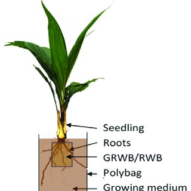

CHAPTER 07
Field Planting of Coconut
Replacement of Old Palms:
- Done when existing old plantation is
- Senile (>60 years)
- Unproductive (<1000 nuts /ac/yr)
Replanting
- Recommended for large scale plantations
- Done on a phased out program
- Plant after complete removal of old plants
- Poly bagged seedlings are more suitable
- Cut down old palms at ground level
- Cover cut surface with soil or apply coal tar / used engine oil
- Old palms standing right at new planting points -> uproot with bole
- Old palms could be sold as timber to recover expenditure
- Agronomically -> replanting proved to be better than under planting (Early flowering, bearing and uniform stand)
Under Planting
- More popular among small holders (provides regular income from old stand)
- Seedlings planted below existing old stand (in the center between palm rows)
- Gradual or annual thinning (removal of old palms) within 5-6 yrs -> (after staring the planting of new seedlings) -> reduce competition (for light, nutrients and space)
- Shade -> seedling become etiolated, show poor growth and delayed flowering
- Before seedling planted -> remove 20% of old palms (weak palms, those standing within 2.4m from new planting points)
Thinning : annual thinning or gradual thinning
(Old palms should stand away 2.4 m from new planting points)
| Years after replanting | Annualthinning | Gradualthinning |
|---|---|---|
| 1 | 15 | |
| 2 | 15% | 30% |
| 3 | 20% | |
| 4 | 20% | 40% |
| 5 | 10% | 10% |
Planting Densities (spacing) and Planting Systems
- Largely depend on :
- Cropping system -> (monoculture or intercropping)
- Agro-climatic zone
- Soil type
- Yield in a given density does not vary significantly with planting system -> (So, planting density is more important)
- Systems of planting- (Square, Triangular and Rectangular)
| Soil type | Nature of density | Plant density(Palms/Ac.) |
|---|---|---|
| Sandy loam / Loamy | High | 70-80 |
| Gravelly and/or Clay | Low | 70-74 |
| Square system | Triangular system | Rectangular system |
|---|---|---|
| Monoculture plantation | Monoculture plantation | Inter cropping system |
| Inter cropping system | 15% more palms/unit area | Palm rows in E-W direction(permanent system of intercropping) |
Field Planting
- Size of a planting hole
- Sandy /Loamy soil : 1 x 1 x 1 m (3'x 3'x 3')
- Gravelly/Cabooky/Quartzitic soil : 1.2 x 1.2 x 1.2 m (4'x 4'x 4')
Preparation of a Planting Hole
- Dig top soil layer to the depth of 30cm (12") -> Keep separately for mixing with fertilizer
- Two layers of coconut husk (with thin layer of soil in between) placed at bottom of seed hole (except low lying areas)
- Seed hole filled with top soil (mixed with 1 kg young palm mixture; (YPM) + 1kg of Dolomite)
- Apply -> 10kg of dried cattle manure or 5kg of goat manure (more beneficial)
- Dip -> seed nut in chlorpyrifos -> (protect from termite damage) (Recommended)
- Seedlings are placed in the center of planting hole.
- Planting depth -> 20cm (8")
- Firmly press (do not cover collar region with soil)
- Seedlings: 7 months old bare – rooted seedlings or 8 months old poly bag seedlings are suitable for planting (Figure)
